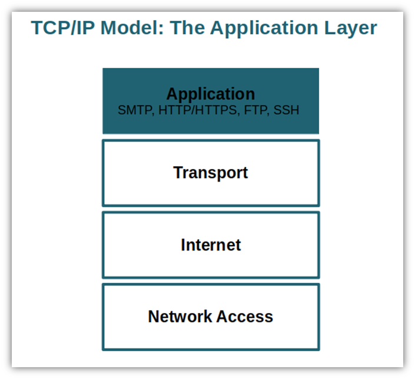

TCP/IP is the communication protocol suite used for transmitting data over the internet. It ensures proper communication between devices.
Components
- TCP: Breaks data into packets and ensures delivery.
- IP: Handles addressing and routing of packets.
Without TCP/IP, devices would communicate like group project members who never check messages.